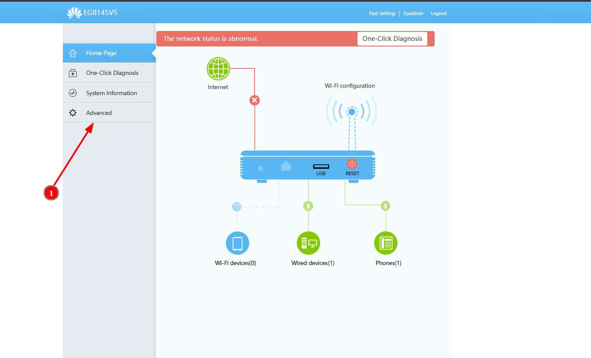
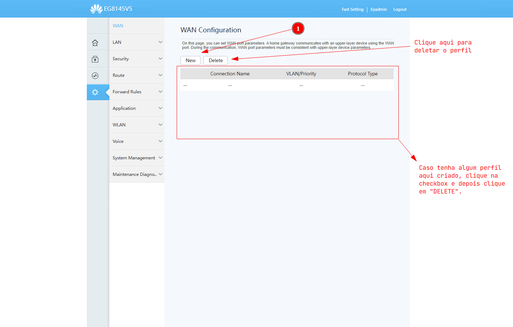
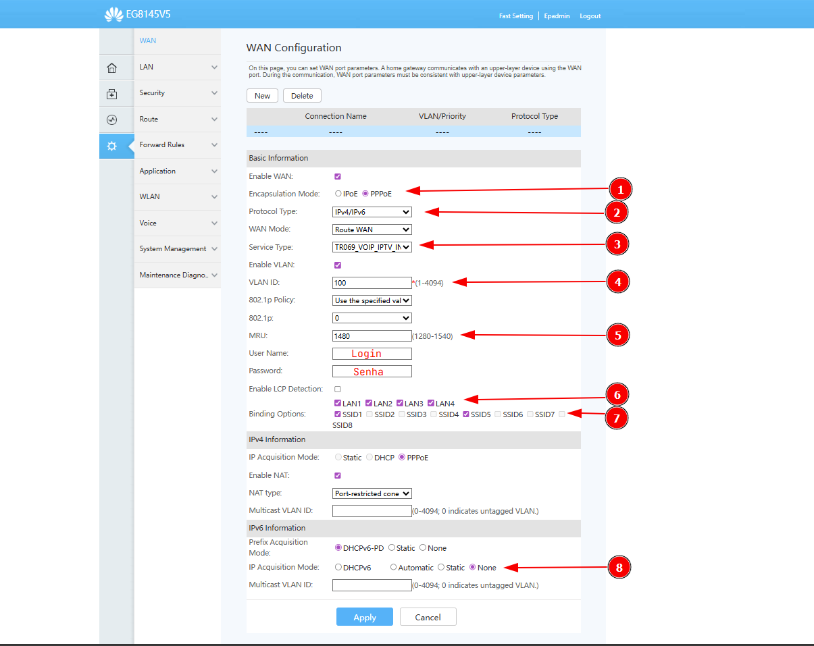
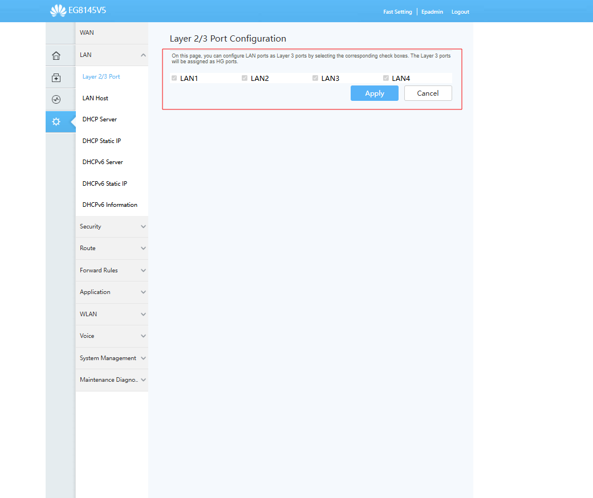
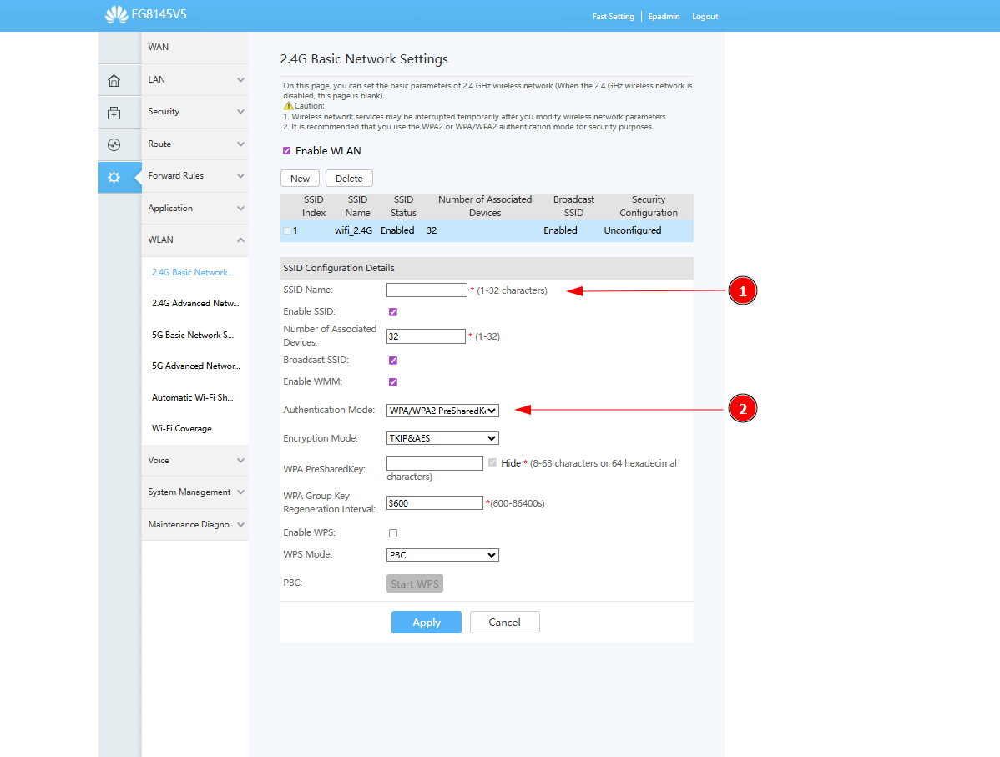
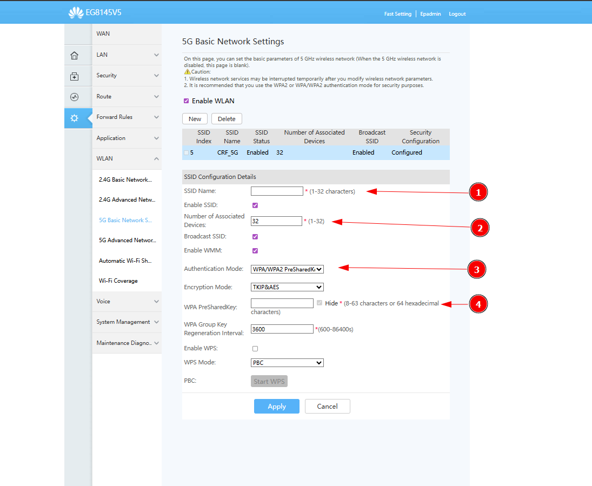
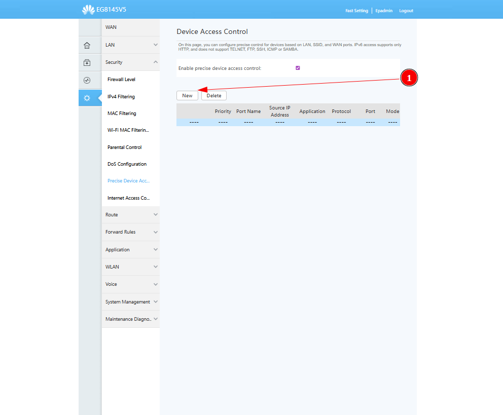
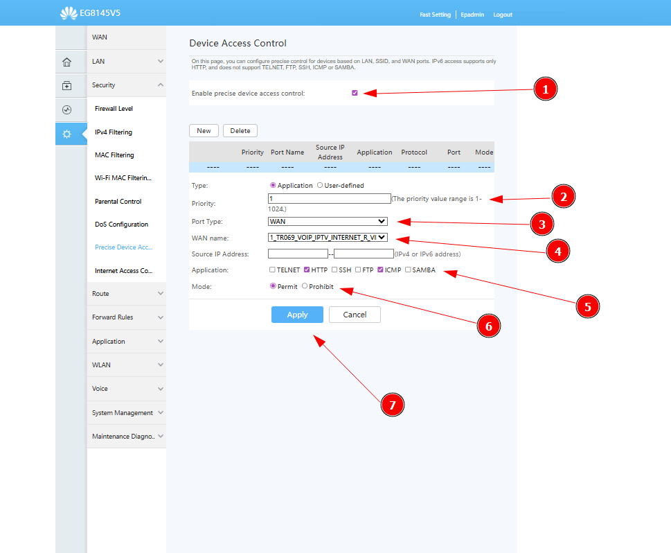
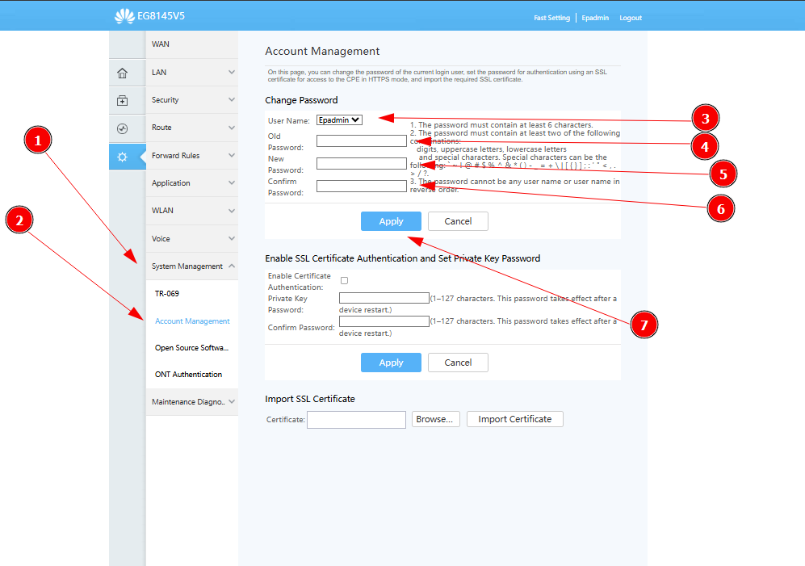

Ip para acesso ao equipamento 192.168.18.1
possivelmente vai está com o login antigo ainda (Epadmin/adminEp),
acesse com essa senha e se não quiser configurar
tudo na mão, vá até o final da página e baixe o firmware já todo configurado!

Assim que entrar no roteador, vai aparecer essa página.
1. Clique em "ADVANCED"

Clique em "WAN" para criar um perfil de configuração do cliente.
1. "NEW" para criar um perfil novo para o cliente.

Clicando em "New", vai abrir o campo abaixo
1."Encapsulation Mode" deixe sempre em "PPPoE"
2."Protocol Type" coloque a opção "IPv4/IPv6"
3."Service Type" coloque sempre "TR069_VOIP_IPTV_INTERNET"
"Enable VLAN" deixe ele habilitado, para você conseguir colocar uma VLAN no equipamento
4."VLAN ID" coloque 100 se for a vlan informada pelo NOC
5."MRU" coloque sempre "1480"
6."Binding Options", set todas as LAN'S
7."Binding Options", "SSID1" para habilitar o wifi 2.4, "SSID5" para habilitar o wifi 5G
8."IP Acquisition Mode", sempre deixe setado "NONE"

Clique em LAN > Layer 2/3 Port, marque todas as opções paara conseguir habilitar elas em "WAN".
Esse passo só vai ser necessário caso você não consiga selecionar elas em "WAN".
Essa opção também serve para desabilitar uma porta que o cliente não queira que funcione.

Clique em "WLAN" para configurar o Wi-Fi do cliente.
1."SSID NAME" nesse campo você colocar o nome do Wi-Fi que o cliente deseja.
2."Authentication Mode", sempre coloque "WPA/WPA2 PreSharedKey"

Clique em "5G Base Network", para configurar o Wi-Fi 5G.
1."SSID NAME" nesse campo você colocar o nome do Wi-Fi que o cliente deseja.
2."Number of Associated Devices" Aqui nesse campo você coloca a quantidade de pessoas que podem conectar no Wi-Fi.
3."Authentication Mode", sempre coloque "WPA/WPA2 PreSharedKey"
4."WPA PreSharedKey", nesse campo você coloca a senha do cliente.

Clicando em "SECURITY", você vai em "PRECISE DEVICE"
1."NEW" para criar um novo perfil.

1."Enable precise device access control" deixe sempre habilitado.
2."Priority" coloque o valor "1".
3."Port Type" Selecione "WAN".
4."WAN name" selecione o perfil da wan que você criou.
5."Application" marque sempre "HTTP" e "ICMP".
6."Mode" Permit
7."APPLY" para salvar as configurações feitas.

Ativação do Acesso Remoto
1.Clique em "System Management"
2.depois clique em "Account Management"
3.Clique em "User Name" para selecionar o perfil.
4."Old Password" Escreve a Senha antiga "adminEp".
5."New Password" Escreva a senha nova "Streetadmin1"
6."Confirm Passaword" reescreva para confirmar a nova senha.
7."Apply" para confirmar as configurações.

Abaixo click a imagem para baixar o firmware configurado do aparelho.